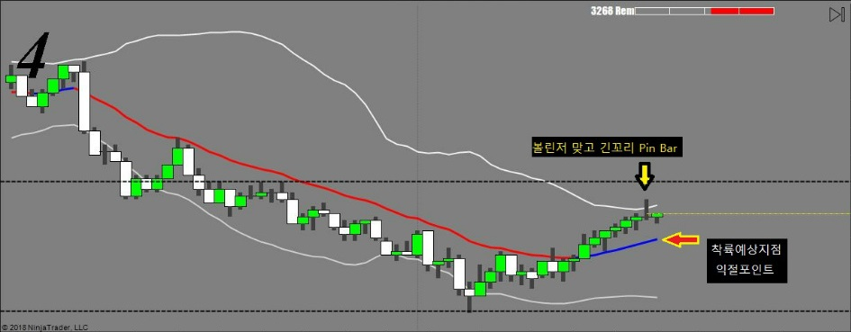
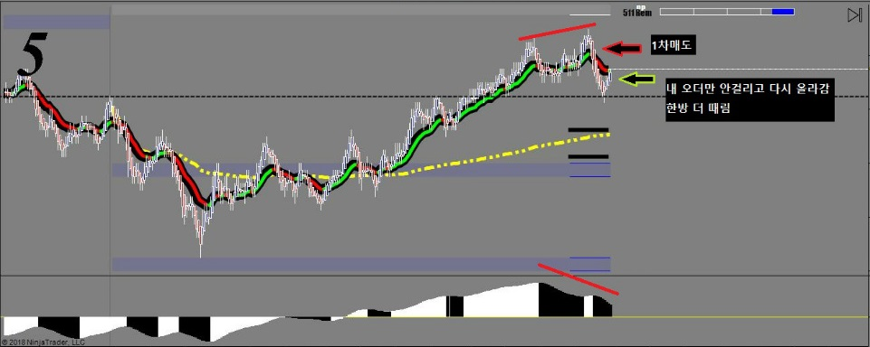
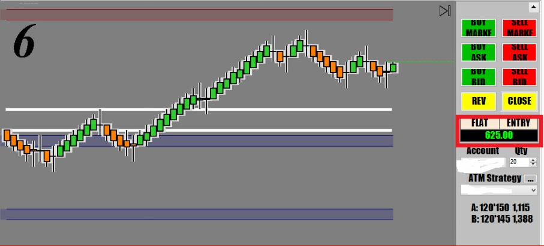

해외선물 - [ZN] 첫 매매에서 $1,200 손실
새로 산 벼개 덕분에 목이 아파서 밤새 뒤척이느라 한잠도 못자고….
늦게 일어나서 졸린눈으로 매매하다 첫 번 매매 $1,200 손실…. 헉….

차트를 보면 아주 작은 봉들이 수없이 만들어지고 있다.
그말은 기관들이 크게 지르지 않고 있다는 뜻이고,
당연히 움직임이 작고 마디 하나가 힘차게 쭉쭉 뻗는 장이 아니라는 말이다.
이런날은 적게 먹고 나와야 되기 때문에 조금만 먹고 나오려는데….
초반에 괜찮아서 잘가나 싶더니만…. 헉….
다시 올라와서 손절에 걸림 $1,200 손실
다시 심기일전해서 재도전
확실한 다이버전스와 거래량을 보고 다시 진입했는데
내 주문까지 왔다가 안걸리고 다시 올라감….

기다렸다가 이평선에서 못뚫고 헤매고 있길래 한 번 더 확인사살 함
성공은 했지만 매매 RULE 을 어긴 Bad Trading 이었음
다행히 예상대로 성공했지만 만약 튀어올라 게속 갔으면 손실이 두배로….
잠을 못자서 판단력이 흐려졌고 첫매매부터 말아먹어서…. 참 아슬아슬한 매매였음
간신히 아침 손실 복구하고 조금 남음….
첫매매를 실패하면 항상 기분이 찝찝해서 평정을 잃기 쉽다.
그럴수록 심호흡을 하면서 마음을 다스리는게 중요하다.

매매복기 - 1차 매매 실패이유
* 잠을 잘 못잤다든지 몸이 아프다든지 피곤하다든지 화가 났다든지 몸 컨디션이 정상이 아닐때는 매매금지! 판단력에 심각한 영향이 오기 때문에 곧바로 손실로 이어진다.
* 지지/저항이 아닌곳에서 만들어지는 추세전환 신호는 신뢰도가 매우 낮다. 거지같은 볼린저밴드에 긴꼬리 도지 떴다고 들어간 실수(기관들은 캔들 모양이나 볼린저밴드같은건 신경도 안쓴다)
* 추세와 반대의 역매매. VWAP과 아무리 큰 이격이 생겨도 추세를 이길 수는 없다. 추세가 강할때는 이격이 100리도 더 벌어진다.
* 모멘텀이 아직 Positive Territory 안에 있는데 매도로 진입…. 잠이 덜 깼다….
* 과도한 자신감에 이차 매도 -> 거의 점쟁이 수준. 트레이더는 절대로 예측을 하면 안된다.
이런 사항들이 매매일지에 기록될 내용이다.
왜 성공했는지 실패했는지 어느 기법을 썼는지
오늘의 실수는 무엇이며 아쉬운점은 어떤것인지
앞으로 연습해서 고쳐야 할 나의 단점이 무엇인지…. 등등
"지혜로운 사람은 자신의 실수를 통해 배우고, 총명한 사람은 남의 실수를 통해 배운다..."
- Dark Templar -